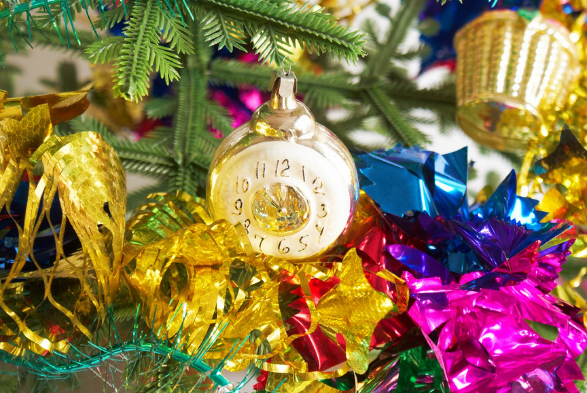

25-60-60")
Стеклянные игрушки
Первые стеклянные игрушки: шары, бусы, сферические зеркальные предметы в виде прожекторов и сосулек — появились на российских елках в середине XIX века. Они были тяжелее современных, потому что делались из толстого зеркального стекла. Первоначально большая часть стеклянных украшений была иностранного производства, однако совсем скоро их стали изготавливать и в России.
 «Купить игрушку из стекла для жителя России конца XIX века было то же самое, что современному россиянину купить машину».
«Купить игрушку из стекла для жителя России конца XIX века было то же самое, что современному россиянину купить машину».После премьеры фильма «Цирк» стали популярны фигурки на цирковую тематику.
В честь освоения Севера елочные лапы украшали фигурками полярников. В это же время появились филигранные и расписанные вручную украшения на восточную тему: Аладдин, старик Хоттабыч, колдун Черномор.
В военные годы на елки вешали фигурки самолетов танков, сталинских броневиков. Также мастерили фигурки из военных погон и подручных материалов, например медицинских бинтов. Лишь после 1947 года началось производство игрушек на «мирную» тематику: новогодние деревья украсили сказочные герои, лесные звери, фрукты и овощи.
